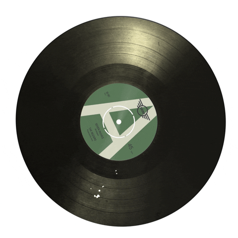

A Recording Industry Association of America, associação que representa as gravadoras dos Estados Unidos, criou um ranking com os artistas que mais venderam álbuns durante toda a história da música. Foram levados em consideração apenas discos certificados e comercializados nos Estados Unidos. Embora a seleção tenha sido feita no país americano, o primeiro lugar é ocupado por uma banda da “Terra da rainha”: os Beatles. Já a segunda colocação ficou a cargo do cantor de música country Garth Brooks, seguido do imortal Elvis Presley. Além deles, a lista também contempla artistas de outros estilos musicais, do pop com Britney Spears, ao rap com Tupac Shakur e Eminem.
Ele e foi a última espécie de super ídolos do pop. Vendeu muito. Mas, pelo que o Wall Street Journal descobriu, ninguém sabe exatamente quantos álbuns Michael Jackson vendeu — certamente estimam-se 750 milhões. Veja, na pré-história, quando as vendas de discos nosEUAEstados Unidos da América não eram eletronicamente contabilizadas pelo Nielsen SoundScan (1991), as coisas funcionavam na base do chute. No Guinness, por exemplo, está escrito que é impossível saber ao certo quantos discos Michael Jackson vendeu. Mas que Thriller é, de acordo com todas as estimativas, o disco mais vendido de todos os tempos. É que antes os únicos dados disponíveis eram o número de cópias mandados pela gravadora para as lojas e as paradas de sucesso. Aliás, as paradas da Billboard eram bem bagunçadas nos dias pré-eletrônicos: elas usavam rankings, não números reais de vendas, presumindo que todos os discos na parada tinham espaçamento igual entre eles, não importa quão grande a distância realmente era.
Assista um dos maiores sucessos do Michael Jackson, clique aqui.
Abbey Road é um verdadeiro fenômeno na história da música. Apesar de Paul McCartney, John Lennon, George Harrison e Ringo Starr terem lançado o álbum em 1969, ele foi o disco de vinil mais vendido da década de 2010, segundo a Nielsen Music. De acordo com o levantamento da empresa, o 12º álbum de estúdio dos Beatles foi o favorito dos norte-americanos nos dez últimos anos. No ano passado, o disco completou 50 anos e voltou ao mercado com o uma versão "super deluxe" de 40 faixas, lançada pela Abbey Road Studios e Universal Music Group. Os Beatles é considerada a banda mais aclamada da história da música popular. Formado na Inglaterra em 1960, o grupo era composto por John Lennon, Paul McCartney, George Harrison e Ringo Starr. Os 13 álbuns lançados por eles foram amplamente difundidos em diversos países, tornando os garotos de Liverpool um fenômeno internacional.
Assista um dos maiores sucessos do The Beatles, clique aqui.
| Artista/Banda | Albuns | Discos Vendidos (Milhões) |
|---|---|---|
| Michael Jackson | Thriller | 47.3 |
| Eagles | Their Greatest Hits | 41.2 |
| Shania Twain | Come On Over | 29.6 |
| AC/DC | Back In Black | 29.4 |
| Fleetwood Mac | Rumours | 27.9 |